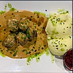
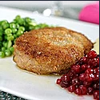
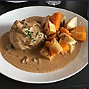
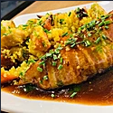
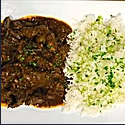

Mom's kitchen
Lunchmeny
Sept. 13-17 2021
- 105 kr mellan 11:00 - 14:00
- Take away 98 kr
- Sallad med dressing, bröd, smör och kaffe ingår alltid i lunchen
- (L) = Innehåller laktos (G) = Innehåller gluten
MÅNDAG
- Texas chili på högrev med nachos, guacamole, salsa, majs, gräddfil & basmatiris (L)
- Pocherad torsk med basilikasås och kokt potatis
TISDAG
- Viltskav med champinjoner messmör, grädde, lingon och potatispuré (L)
- Pocherad sej med spetskål, citron, timjan, vitvinssås och kokt potatis
ONSDAG
- Stekt fläsk med raggmunk och lingon / Bruna bönor och kokt potatis (G)
- Friterad panerad torsk med grönärtspuré, aioli och pommes (G)
TORSDAG
- Friterad kyckling med sötsur sås och basmatiris (G)
- Pestobakad kummel med skaldjurssås och örtpotatis
FREDAG
- Sydfranska pannbiffar med ratatouille och rostad potatis (G)
- Halstrad lax med tryffelhollandaise och kokt potatis
Mom's Favoriter
Mom's signaturrätter
Köttbullar - Meatballs
* * * * * 140 kr * * * * *
Köttbullar med potatismos och gräddsås // Meatballs with mashed potatoes and cream sauce
KALL eller VARM
Wallenbergare
* * * * * 145 kr * * * * *
Wallenbergare med smält smör, gröna ärtor och potatismos -Wallenberger with melted butter, green peas and mashed potatoes
KALL eller VARM
Het pannbiff
* * * * * 135 kr * * * * *
Het pannbiff med ugnsstekta rotfrukter och svampsås -Pannbiff with roasted root vegetables and mushroom sauce
KALL eller VARM
Mom's GI Chicken
* * * * * 135 kr * * * * *
Kycklingbröst inlindat i bacon serverad med ugnsrostade rotfrukter, saffrans quinoa och rödvinsås - Chicken breast wrapped in bacon served with roasted root vegetables, saffron quinoa and red wine sauce
KALL eller VARM
Långkokt - Slow cooked stew
* * * * * 145 kr * * * * *
Långsamt tillagat nötkött med rödvinsås och ris
KALL eller VARM
